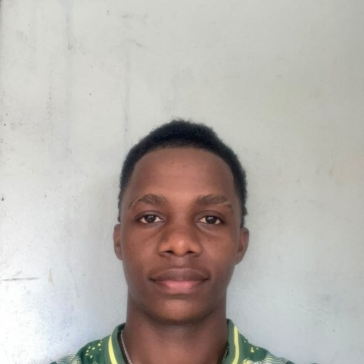

Je m'appelle Astoiyous Hassani Moustoifa, j'ai 19 ans et je viens de commencer ma première année de BTS TSRS à Mayotte. Passionné d'informatique, j'ai créé mon propre support de révision en 27 modules pour m'aider à apprendre tout au long de ma formation. Je cherche une entreprise pour mon alternance.

Plutôt que d'attendre, j'ai créé un site complet pour organiser ma révision du programme du BTS. C'est la preuve la plus concrète de ma motivation.
Un site que j'ai conçu et réalisé en pilotant des outils d'intelligence artificielle : tous les chapitres du programme, organisés module par module, avec un planning de travail sur 52 semaines.
Je ne me contente pas d'utiliser un ordinateur : je sais piloter une IA pour produire un résultat concret et vérifiable.
L'intelligence artificielle n'écrit pas à ma place : c'est moi qui décide, qui oriente, qui vérifie et qui corrige. Voici concrètement ce que je sais faire.
Deux réalisations concrètes :
« L'IA ne remplace pas le technicien : elle lui donne des superpouvoirs.
Je sais déjà m'en servir. »
Je viens de commencer ma première année de BTS TSRS. Je ne prétends pas être un expert : voici les domaines que je découvre, que je travaille sérieusement — et que je vais approfondir pendant deux ans.
Les bases : modèle OSI, TCP/IP, adressage IP. Je découvre ces notions en cours et je les travaille avec mon support de révision personnel.
Découverte de Windows et Linux : comptes utilisateurs, prise en main de la ligne de commande, premiers services.
Les principes de base : gestion des droits d'accès, mots de passe, bonnes pratiques de protection.
Word, Excel, recherche en ligne. J'utilise également des outils d'intelligence artificielle pour concevoir des sites web.
Je sais apprendre seul et aller au bout d'un projet : j'ai construit mon propre support de révision en 27 modules et ce portfolio, de la première idée à la mise en ligne.
Rigueur, ponctualité, autonomie et esprit d'équipe — éprouvés dans le commerce familial et dans la pratique des sports collectifs.
Formation, expérience et engagements.
Commercial polyvalent — entreprise familiale
Réception et déchargement des marchandises, contrôle à la réception, mise en rayon,
réassort. Un travail qui exige méthode, précision et sens du service.
Sports collectifs (football, basketball, volley), gestion d'équipe et organisation d'événements sportifs, informatique et nouvelles technologies.
Je suis disponible pour un entretien, à Mayotte ou en visio. N'hésitez pas à me contacter directement — je réponds rapidement.